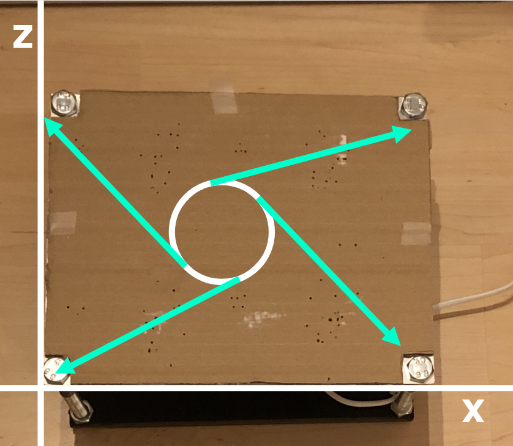
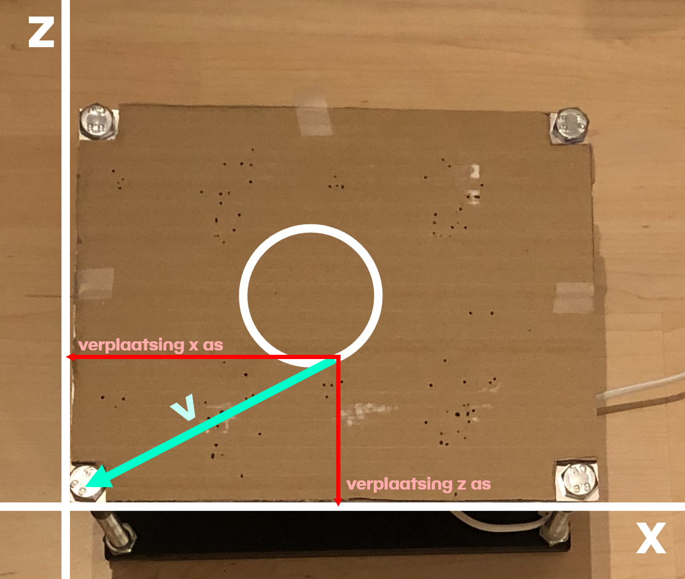
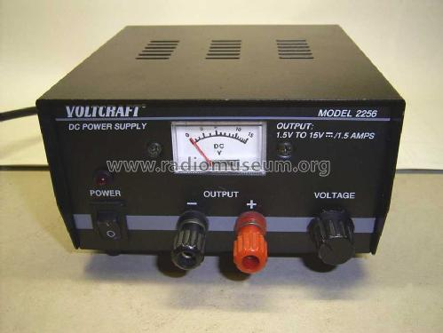

Je eigen trilplaat maken, het klinkt ingewikkeld, maar met de juiste materialen is het een haalbare opdracht. In dit artikel nemen we je stap voor stap mee, hoe jij je eigen trilplaat kan maken. Graag wijzen we je erop dat, om je eigen trilplaat te maken
je moet beschikken over de juiste materialen, maar ook over de juiste gereedschappen. Voor ons onderzoek hebben wij een trilplaat laten maken door Tjeerd Faase, instrumentmaker voor het Hubrecht Instituut. Hierdoor beschikten wij over
de juiste materialen, gereedschappen en expertise. Wij willen daarom bij voorbaat duidelijk maken, dat ondanks dat dit een stap voor stap uitleg is, om de trilplaat na te maken, dit wellicht niet voor iedereen te verwezenlijken is,
dit voor de reeds benoemde redenen, van expertise, materialen en gereedschappen.
NOTITIE:
De stappen en aanwijzingen die worden beschreven en gegeven in het onderstaande artikel, zijn suggesties! Denk eerst aan eigen veiligheid voor het uitvoeren.
Werking van de trilplaat
De werking van de trilplaat is relatief eenvoudig, door het ronddraaien van het gewichtje, dat niet in het midden van de plaat is gemonteerd, ontstaat er een centrifugaalkracht. Deze kracht zorgt ervoor dat het gewicht zich naar buiten verplaatst. Het
grondoppervlak van de trilplaat zal meebewegen met de cirkelbewegingen, en dus naar buiten willen uitslaan. Dit werkt alleen omdat het onbalansgewicht zich niet in het midden bevind, was dit gewicht wel in het midden gemonteerd, dan
was er niets gebeurd. Dit komt, omdat er dan geen verschil optreedt en de plaat dus niet zal gaan bewegen. Maar, wanneer dit gewicht buiten het midden wordt gemonteerd, ontstaat er een verschil en zal de grondplaat dit verschil proberen
op te vangen door mee te bewegen, om zo een evenwichtige situatie te krijgen.

Afbeelding 1
De richting van de trilplaat bij de cirkelbeweging
Video 1
De werking van de trilplaat in beeld
De trillingen worden veroorzaakt door de veren waarop het grondoppervlak is gemonteerd. Wanneer het gewicht ronddraait, zal de plaat door de centrifugaalkracht naar buiten worden getrokken, de veren zullen hierbij meebewegen. Een gedeelte van de bewegingsenergie
zal hierbij worden omgezet in veerenergie, waarna als de kracht van de veer sterker is dan die van de centrifugaalkracht, de veer weer terug zal gaan naar zijn rustpositie. Deze terugbeweging zorgt voor een beweging op de x- of de
z-as. Hierbij een trilling makend.

Afbeelding 2
Effect van de centrifugaalkracht
De trilplaat wordt gevoed door een Voltcraft DC Power Supply 2256, zie de afbeelding bij materialenlijst. Deze voeding kan tot 15 V leveren. De motor die de trilplaat aanstuurt gaat tot 10 V, let daarom goed op bij je eigen motor hoeveel spanning je er
maximaal op kan zetten! De stroomkring is relatief eenvoudig op te zetten, gegeven in de afbeelding hieronder. De voeding sluit je aan op het lichtnet, 230 V, waarna je doormiddel van de draaiknop op de voeding de spanning kan reguleren
die in de stroomkring terecht komt. Bij deze voeding is dat tussen de 1 en 15V.

Afbeelding 3
Stroomkring van trilplaatopstelling
De werking van de voeding zelf is iets ingewikkelder, maar die hoef je niet zelf in elkaar te zetten.

Afbeelding 4
Stroomkring van de Voltcraft DC Power Supply 2256 (op werking)
OPTIE:
Afbeeldingen 3 en 4, kunnen slecht te zien zijn door de gelimiteerde ruimte op de pagina. Klik op de onderstaande links om ze in het groot te bekijken (inzoom mogelijkheid).
Afbeelding 3 Afbeelding 4
Materiaallijst
- 1x Stevige grondplaat ~(23 x 29 cm)
- 4x Cilinder lang ~(10.5 cm)
- 4x Cilinder kort ~(2 cm)
- 12x Bouten groot (doorsnede 1.9 cm)
- 4x Bouten medium (8.8 cw)
- 8x Bouten klein ~(doorsnede 1 cm)
- 1x Motoroppervlak ~(13 x 8.5 cm)
- 1x Trilplaatoppervlak ~(23 x 29 cm)
- 4x Veer (13 rings) ~(4.3 cm)
- 1x Oppervlakmateriaal* ~(23 x 29 cm)
- 1x Motor**
- 1x Gewicht ~(1 kg)
- 1x Voeding*** (voltcraft 2256 1 - 15 V)
* Oppervlakmateriaal: Dit gebruik je om je bouwwerk vast te maken op de trilplaat, zorg er dus voor dat het iets is waar je je object in kan vast prikken. Bijvoorbeeld karton of foam.
** Motor: Kies een motor die het gewichtje kan ronddraaien op aardige snelheid. Zorg ervoor dat je erop let dat de maximale spanning niet wordt overschreden door je voeding!
*** Voeding: De voeding is afhankelijk van je motor, voor onze motor is een voeding van 1 tot 10 V voldoende. Draag er zorg voor dat de voeding de juiste spanning kan leveren, zodat je niet je motor kapot maakt.

Afbeelding 3
Voorbeeld voeding